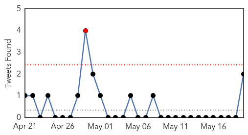
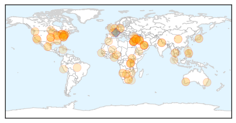
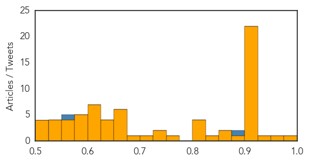
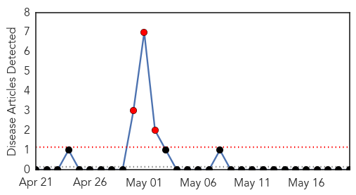
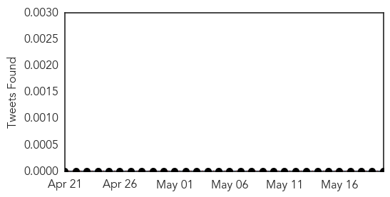

Unknown
30-Day Web Trend
0 alerts, 0 warnings

30-Day Twitter Trend
1 alerts, 0 warnings

Article Locations
Article Confidences
Top Articles:
- 0.976
- Lyme disease: Doctors advise against long-term antibiotic treatment Republican American
- 0.959
- Kunjin virus detected in Pilbara sentinel chicken flocks Health Dept warns
- 0.949
- Ticks found on Toronto Islands being tested for Lyme disease
- 0.920
- Untitled Article
- 0.917
- Chicago Tribune
- 0.917
- Chicago Tribune
- 0.917
- Chicago Tribune
- 0.917
- Chicago Tribune
- 0.917
- Chicago Tribune
- 0.917
- Chicago Tribune
- 0.917
- Chicago Tribune
- 0.917
- Chicago Tribune
- 0.917
- Chicago Tribune
- 0.917
- Chicago Tribune
- 0.917
- Chicago Tribune
- 0.917
- Chicago Tribune
- 0.917
- Chicago Tribune
- 0.917
- Chicago Tribune
- 0.917
- Chicago Tribune
- 0.917
- Chicago Tribune
- 0.917
- Chicago Tribune
- 0.917
- Chicago Tribune
- 0.917
- Chicago Tribune
- 0.912
- Vaccine shortage hampers fight against FMD
- 0.910
- The world windows to Thailand
- 0.885
- Malaria cases spike in Serowe
- 0.863
- Stay smart when it comes to ticks — even in the city - Toronto
- 0.859
- 21Alive: News, Sports, Weather, Fort Wayne WPTA-TV, WISE-TV, and CW
- 0.840
- Mosquito-borne virus Zika threatens Caribbean
- 0.822
- State to produce goat plague vaccine
- 0.820
- South Korea reports first case of MERS virus; patient stable
- 0.818
- Studies Confirm Brain Plaque Can Help Predict Alzheimer’s
- 0.803
- S. Korea reports first case of MERS virus
- 0.773
- Health officials seek parents’ help in E. coli investigation
- 0.749
- Pack the insect repellent to fend off ticks this Memorial Day Weekend
- 0.740
- Dog owners urged to be wary of deadly disease
- 0.703
- Gonorrhoea: Silent rage of a ‘forgotten’ disease
- 0.690
- IS militants seize control of Palmyra as Syrian forces withdraw
- 0.674
- UPDATED: Tap water is now safe to drink
- 0.671
- Ghana certified as Guinea worm-free country
- 0.669
- Leading underwriter releases major cover update
- 0.662
- China to spend billions as it seeks Latin American inroads
- 0.658
- UN delivering improved health services for over five million Palestinians according to new report
- 0.651
- Korea reports MERS case; patient visited Bahrain
- 0.645
- Newly Developed Blood Tests can Diagnose Irritable Bowel Syndrome
- 0.638
- Ghana certified as guinea worm-free country
- 0.631
- Key jihadist linked to French journalists’ murders killed in Mali
- 0.631
- Italian police arrest Tunisia museum attack suspect
- 0.620
- Ticks found on Toronto islands being tested for Lyme disease
- 0.615
- Netanyahu calls off plan to segregate West Bank buses
Showing top 50 articles...
Top Tweets:
- 0.899
- Dr Neira: Strengthening health syst., surveillance, vector control, access to water & sanitation can prevent health impacts from climate
- 0.661
- Clinicians: Take our flu antiviral quiz for quick facts on this key flu treatment: http://t.co/ksbPkIOmIS
- 0.593
- RT: Clinicians: Take our flu antiviral quiz for quick facts on this key flu treatment: http://t.co/ksbPkIOmIS
- 0.561
- Dr Maria Neira, WHO's Director Public Health, Environment presents technical updates on climate and health WHA68
Bubonic Plague
30-Day Web Trend
3 alerts, 0 warnings

30-Day Twitter Trend
0 alerts, 0 warnings

Article Locations

Article Confidences

Top Articles:
-
No articles found for May 20, 2015
Top Tweets:
-
No tweets found for May 20, 2015